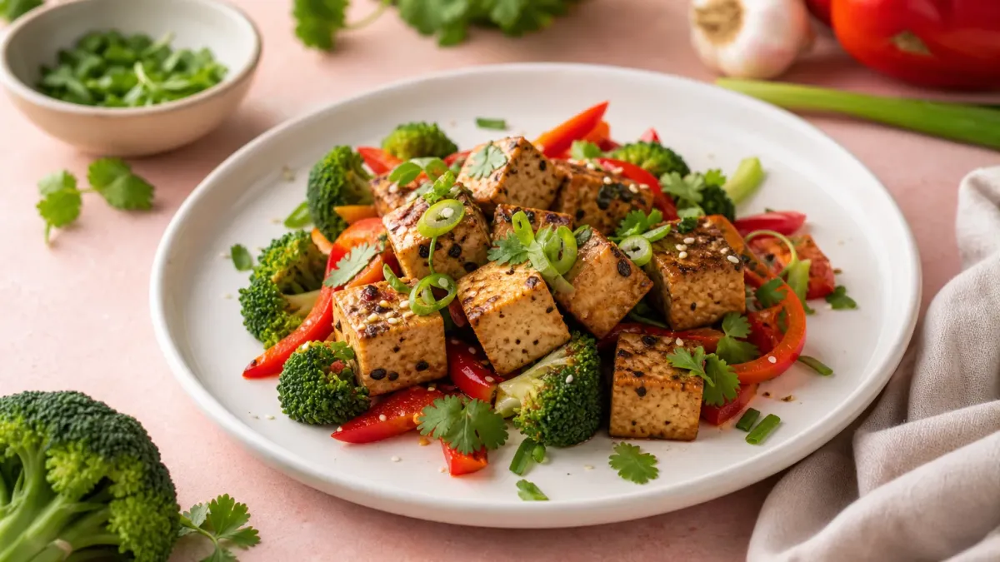

豆腐がダイエットレシピに向いている3つの理由
豆腐は木綿豆腐1丁（300g）あたり約216kcal、絹ごし豆腐なら約174kcalと低カロリー。さらに植物性たんぱく質が豊富で、食べごたえがあるのが特徴です。
ダイエット中に不足しがちな栄養素をまとめて補えるため、「食べながら体を整えたい」という方に特に向いています。
- ✅ 低カロリー：同量のご飯（300g／504kcal）の約半分以下
- ✅ たんぱく質が豊富：木綿豆腐100gあたり約7g含有
- ✅ 調理が簡単：加熱不要のレシピも多く時短できる
📊 豆腐のカロリー＆栄養まるわかりガイド
※100gあたりの比較（文部科学省「食品成分データベース」参考）
※木綿豆腐の数値。絹ごし豆腐はカロリーがやや低め（約56kcal/100g）。数値は目安です。
豆腐ダイエットレシピ10選｜朝・昼・夜別に紹介
「何を作ればいいかわからない」という方のために、時間帯別に使いやすいレシピを厳選しました。どれも調理時間10分以内が目安です。
🌅 朝食向け：3レシピ
① 豆腐スクランブルエッグ（約180kcal）
絹ごし豆腐1/2丁（150g）と卵2個を炒めるだけ。塩・こしょう・ごま油で味付けすれば、たんぱく質が約18g摂れる朝食になります。調理時間は約5分。
② 豆腐スムージー（約120kcal）
絹ごし豆腐100g・バナナ1/2本・豆乳150ml・はちみつ小さじ1をミキサーにかけるだけ。忙しい朝でも飲みながら栄養補給できます。
③ 豆腐の和風サラダ（約90kcal）
絹ごし豆腐1/2丁をちぎって器に盛り、かつお節・ポン酢・小ねぎをかけるだけ。火を使わず2分で完成します。
☀️ 昼食向け：3レシピ
④ 豆腐チャンプルー（約220kcal）
木綿豆腐1/2丁・卵1個・もやし100g・ツナ缶1/2缶を炒め、めんつゆで味付け。食物繊維とたんぱく質を同時に摂れる一皿です。調理時間約8分。
⑤ 豆腐と野菜の中華スープ（約100kcal）
絹ごし豆腐1/3丁・白菜100g・しいたけ2枚を鶏がらスープで煮るだけ。スープにすることで満腹感が持続しやすくなります。
⑥ 豆腐そぼろ丼（ご飯少なめ）（約280kcal）
木綿豆腐1/2丁を炒り、鶏ひき肉50gと合わせて甘辛く味付け。ご飯は100gに抑えることで、通常の丼より約150kcal抑えられます。
🌙 夜食向け：4レシピ
⑦ 豆腐の味噌汁（約60kcal）
絹ごし豆腐1/4丁・わかめ・ねぎで作る定番の味噌汁。夜の食事に汁物を加えると、食べ過ぎを防ぎやすくなります。
⑧ 豆腐ハンバーグ（約200kcal）
木綿豆腐1/2丁・鶏ひき肉100g・玉ねぎ1/4個・片栗粉大さじ1を混ぜて焼くだけ。通常のハンバーグより約100kcal少なく、たんぱく質は約20g確保できます。
⑨ 豆腐と鮭のホイル焼き（約190kcal）
木綿豆腐1/3丁・鮭1切れ・えのき50gをホイルに包んでトースターで12分。DHA・EPAも摂れるヘルシーな夜ごはんです。
⑩ 冷奴アレンジ（キムチのせ）（約110kcal）
絹ごし豆腐1/2丁にキムチ50gをのせるだけ。発酵食品の組み合わせで腸内環境を整えながら、夜の食欲を落ち着かせます。
豆腐レシピをもっと知りたい方は、ダイエットレシピ豆腐の満足メニュー7選もあわせてご覧ください。
豆腐ダイエットレシピを続けるための3つのコツ
レシピを知っていても、続けられなければ意味がありません。無理なく取り入れるための工夫を3つ紹介します。
コツ①：1日1食だけ豆腐に置き換える
最初から3食すべてを変えようとすると、ストレスになりがちです。まずは夕食のご飯を豆腐に一部置き換えるところから始めましょう。ご飯150gを豆腐150gに変えるだけで、1食あたり約130kcalの差が生まれます。
コツ②：週3〜4回を目標にする
毎日続けようとすると飽きやすくなります。週3〜4回のペースで取り入れ、残りの日は鶏胸肉レシピなど他のヘルシー食材と組み合わせると、食事のバリエーションが広がります。
コツ③：味付けを変えてマンネリを防ぐ
同じ豆腐でも、和風・中華・洋風と味付けを変えるだけで飽きにくくなります。ポン酢・ごま油・トマトソース・カレー粉など、調味料を週ごとにローテーションするのがおすすめです。
豆腐の種類別・ダイエットへの使い分け
豆腐には主に「木綿」「絹ごし」の2種類があります。それぞれ特徴が異なるため、料理に合わせて選ぶと上手に活用できます。
- 🟤 木綿豆腐：たんぱく質が多め（100gあたり約6.6g）。炒め物・ハンバーグ・そぼろに向く
- ⬜ 絹ごし豆腐：カロリーがやや低め（100gあたり約56kcal）。スープ・スムージー・冷奴に向く
食事管理の全体的な献立を組みたい方は、食事管理の記事一覧からほかのレシピ記事もチェックしてみてください。
よくある質問
Q. 豆腐を毎日食べても大丈夫ですか？
豆腐を毎日食べること自体は問題ありませんが、1日の摂取量は1丁（300g）程度を目安にするとバランスが取りやすいです。豆腐に含まれるイソフラボンは1日の摂取上限（イソフラボンとして約70〜75mg）が設定されており、豆腐1丁でおよそ80mgほどになります。他の大豆食品（豆乳・納豆など）と重ねて大量に摂るのは避け、食事全体のバランスを意識しましょう。
Q. 豆腐ダイエットで何キロ痩せられますか？
豆腐を取り入れることで痩せる量は、食事全体の内容・運動量・生活習慣によって大きく異なります。たとえば夕食のご飯150gを豆腐150gに置き換えると、1日約130kcalの差が生まれます。これを週5日続けた場合、1ヶ月で約2,600kcal分の差になります。ただし、豆腐だけで体重が変わるわけではなく、食事全体のバランスと組み合わせることが大切です。
Q. 豆腐はダイエット中の夜食に食べてもいいですか？
就寝2時間前までに食べ終えることを意識すれば、夜に豆腐を食べること自体は問題ありません。冷奴や豆腐の味噌汁など、消化しやすい調理法を選ぶのがおすすめです。揚げ出し豆腐など油を多く使うメニューは夜より昼に食べる方がベターです。